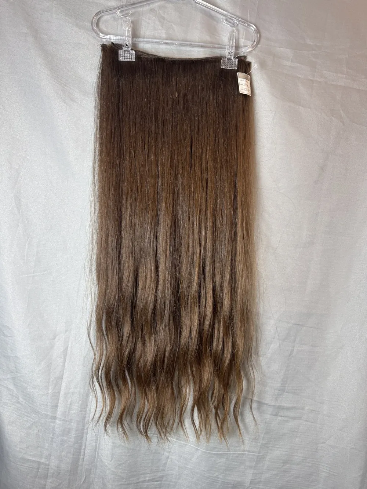

HAIR TEMPPLE · ACERVO CAPILAR
Cada cabelo,
uma possibilidade.
Explore tonalidades, texturas e comprimentos.
Fotografias e vídeos reais da sessão de 4 de novembro.

SELEÇÃO DE CABELOS
Encontre o seu tom.
Primeira conferência do acervo. Cores e texturas foram avaliadas pelas imagens; dados ausentes permanecem pendentes. Fotos semelhantes complementam uma ficha quando o vínculo é identificável.
Nenhum resultado com esses filtros. Tente outra cor ou código.
CONTROLE DE FAIXAS
Uma ficha.
Todos os detalhes.
Um conjunto com duas etiquetas ocupa uma única linha. Os pesos, comprimentos e valores de cada faixa ficam discriminados; peso e preço totais são somados.
Fotos juntas e separadas são associadas ao mesmo registro quando identificadas. Uma etiqueta repetida em outra foto não multiplica a quantidade de faixas.
Use Conferência para revisar as unidades e a disponibilidade. Alterações neste catálogo ficam salvas neste navegador; exporte a conferência para levar as revisões à planilha.
Abrir pasta original no Drive ↗